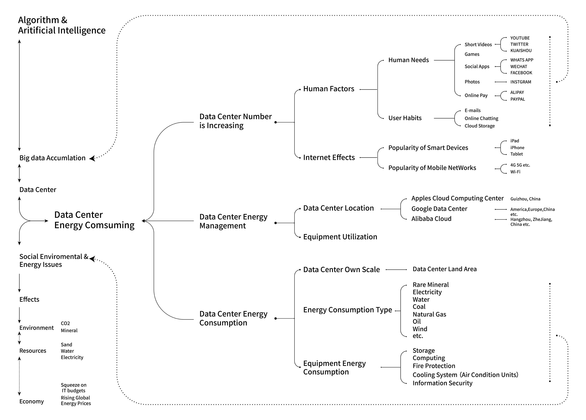
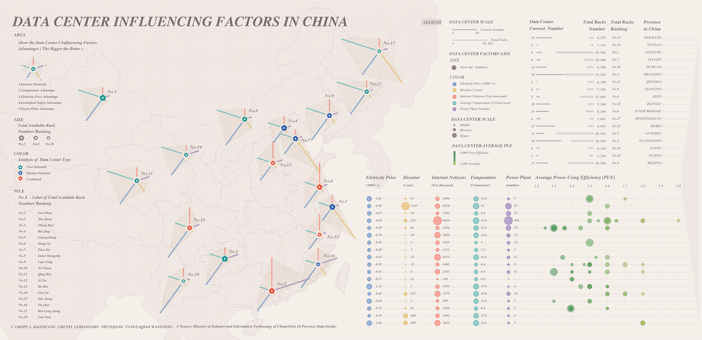
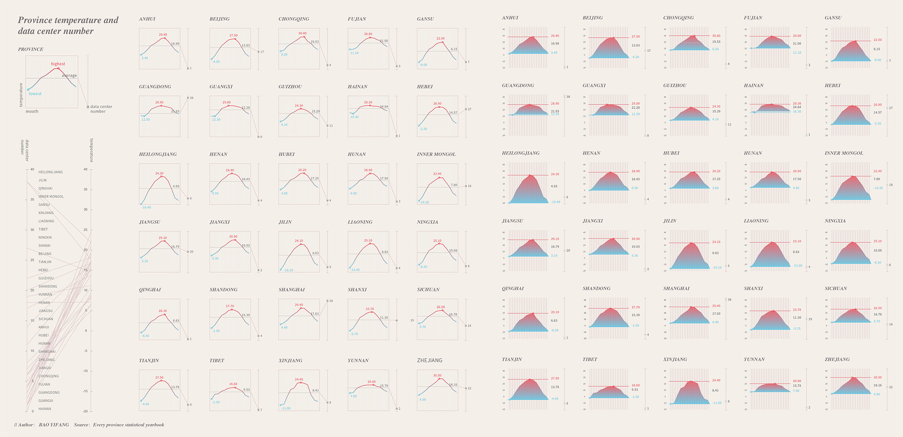
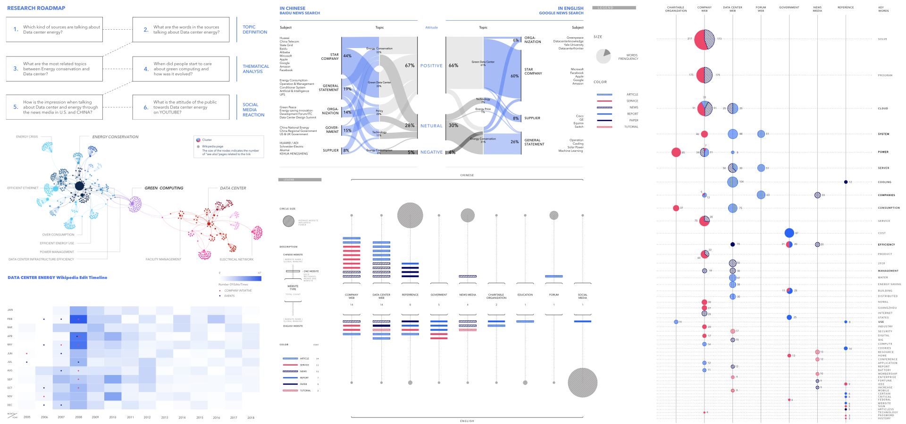
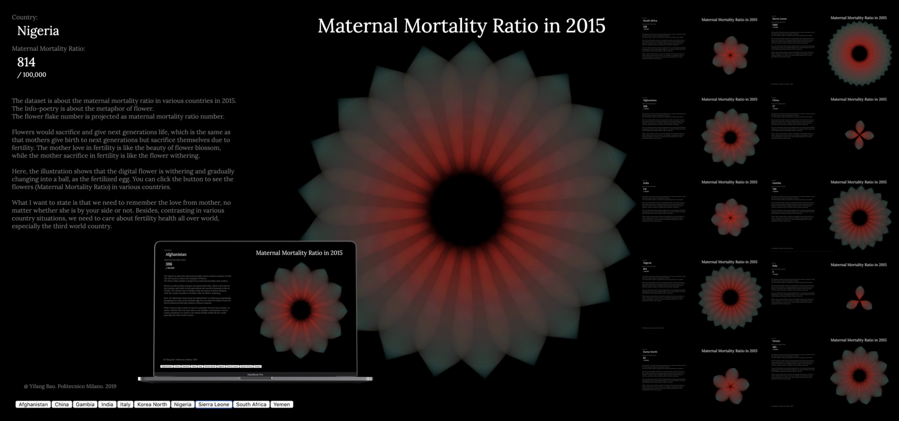

返 回
米兰理工的Density Design实验室团队的整合设计Studio，是传达设计课程体系里最重要的一门课程，内容贯穿于数据可视化和信息可视化之间。结合小组选定的课题方向，分三大阶段进行探索。
第一阶段：搜集结构性的、官方的（包括政府、公司、组织等）公布的现有数据，进行可视化及数据分析。第二阶段：搜集非结构性的、非官方的数据，涉及各社交平台如Facebook，Youtube，Twitter等，需要利用工具爬取数据，面对数据的复杂性问题，进行可视化及分析。第三阶段：转化数据，设计出公众能够参与、沉浸、反思的数据体验。
在设计领域的可视化， “Data Visualization” 和 “Info Graphics” 是可视化这条线的两端，数据可视化强调数据和真实，信息图形化强调信息和传达，但具体设计的个中比例需要决策。总之，可视化的核心不是图形，而是由信息获得洞见，并最终产生认知和交流。
我们选择了数据中心能源为主题。在协作中，我主要负责数据搜集及整理，数据可视化及分析，前端网页设计及编程。
本阶段主要搜索官方的、已发布数据。从“数据中心能源”主题出发，构建研究逻辑图如下：
最终，我们结合中国18省的“平均电价、电厂数量、自然灾害、互联网民数量、年均气温”，分析中国的数据中心选址影响因素。需要说明的是，相关性不代表因果，从图中发现一些相关性趋势，不能代表是决定性因素。图中，可以宏观浏览数据中心的分布，及五个影响因素对其的影响，也可具体对应数值。其数据的主要来源是：中国工业和信息化部，以及各省统计年鉴。
 中国数据中心影响因素分布图（点击查看PDF）
左上，雷达图延伸出五个维度，颜色用于区分五个影响因素，长度代表有利的程度：红色是网民数量（需求越大，长度越长），蓝色是电价（电价越低，长度越长），青色是年均气温（气温越低，长度越长），紫色是电厂数量（数量越多，长度越长），黄色是自然地理灾害（灾害越少，长度越长）。整体来看，雷达图面积越大，越有利建设数据中心。中间五角星大小代表可用机架数排名（五角星越大，机架数越多），旁边也用数值进行标注。通过分析，我们将数据中心分为了3种类型：绿色是成本导向，蓝色是市场导向，红色是两者结合。
右上，几条并行轴是18省的具体数据，颜色表示不同类型，尺寸表示数值大小。另外可见 PUE（Power Using Efficiency 能源使用效率）数值，每个点代表一个数据中心，大小分别代表3种规模（大、中、小），颜色代表节能程度，越绿越节能，越黄越不高效。在上方，可对应到相应省的数据中心的现有数量和可用机架数量。
下方，展示中国30个省的年均气温和数据中心数量的关系。
从图中分析，得知：一、黑龙江整体数据显示适合建设成本导向型数据中心，但与之相反，其数据中心数量较少，较低的市场需求无法驱动数据中心建设，未来存在潜力。二、贵州数据中心建设是成本导向型，另有一些未被考量的因素影响，比如水资源。三、一线城市北京、上海的数据中心大多是典型的市场导向型；而广州在大量市场需求的同时，有较多的电力资源供给，数据中心属综合型。五、西北部地区有自然优势，数据中心的建设仍存在潜力。
该阶段通过爬取数据的形式搜集非官方数据，进行可视化分析，点击下方图片进行网页探索。
数据中心能源话题的公众探索（点击查看网页）
通过第二阶段分析，得知：数据中心能源大多于企业、技术、论文的探讨，社交媒体则很少。对数据中心能源的讨论核心离不开“绿色计算”，在维基百科上，该词条在2005年创建，在2008年达到编辑顶峰，也许与政府的政策和公司的策略相关。而在媒体报道中，数据中心能源的话题大多为积极绿色的，负面报道则较少，另通过数据中心能源相关的视频评论，结合IBM沃森的情绪分析，公众的情绪呈现中立和积极偏多。
我们的日常生活已离不开互联网，数据中心在朝着大型方向增加，其能源的发展必然是绿色的，但我们也需意识到，也许并不向媒体所讲述的那样，数据中心的能耗实际上是巨大的。
数据中心耗能数据体验（点击进入）
该阶段通过设计数据体验，让公众进行数据探索，并从中有所反思和获得。我们搜集Instagram，Twitter，Youtube，Email，iTunes，Snapchat的相关数据，并通过估算得出数据能耗，用户能够在网页中进行体验探索。用户输入个人数据，获得能耗反馈，以及节约能耗的提示。请点击图片进入体验。
课程中还穿插统计学知识，对基本的统计学图形，如散点图、箱图等有所了解，并学会R语言和使用工具R Studio。在案例分析中，切身实践K-means、Hclust、PCA等统计算法。作为设计师，能够熟悉使用计算机语言和工具能够大大减轻工作的负担，且计算机辅助能更清晰容易地分析数据规律，获得洞见。
此外，Info-Poetry也作为课程的个人作业。Info-Poetry简单讲就是“metaphor”，即用符号传达信息，赋予诗意般的比喻。和文学意义里的比喻一样，两者间需有某种强关联性，才能构成比喻。赋予其诗意，则是为了动人的体验。
产妇死亡率如花凋零Info-Poetry（点击进入，最佳体验请全屏并刷新观看）
在这个部分，我以2015年产妇死亡率为主题，以花作为隐喻。因为鲜花会凋零，以给予下一代生命，正如母亲因生育下一代而牺牲自己。母亲对生命的热忱如花美丽，而母亲生命的牺牲也如花般凋零，以动态数字花瓣的变化呈现该凋零的过程，而每片花瓣的数量对应为孕产妇死亡率数字。以浪漫的说法，我们要记住母亲的爱，无论她是否在身边。此外，在各个国家情况的对比，我们需要关心全世界的生育健康，尤其是第三世界国家。
数据是有历史的，从古至今，只不过数据量、记录保存形式、真实混乱度、在线及设备都有所不同。数据也不分行业，是建立在各行各业的基础上的行业。书可以是数据的，读者可以是数据的，婚姻也可以是数据的。我们要知道，数据不是凭空产生的，也不是没有历史的。只是这个时代，正好处在了技术革命带来的数据爆发的时代。用数据挖掘信息，完成任务的本质需求没有变化。变化的是，处理的形式，及处理的结果。数据量增加，复杂度增加，对于数据处理的需求增加，技术更先进了，人们对文化的接受度也更包容，所以就有了如今的数据可视化的状态。
从有记录的文化开始，我们用图形来表达含义；然后，我们用图形来表达和记录现象，如地图、股市图。人类习惯以图形辅助认知。而这之中数据可视化关键同理，是以图形或交互的认知形式处理数据的复杂性。由数据产生信息，信息转化为知识。可视化的方式则必须是直观和理性的，包括点，线，交互在内的每个元素。